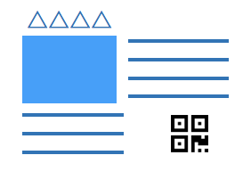

<ons-page id="qrscan" modifier="bgImage">
  <!-- ツールバー -->
  <ons-toolbar modifier="toolbar">
    <div class="left">
      <ons-back-button modifier="toolbar">戻る</ons-back-button>
    </div>
    <div class="center">QRコード</div>
  </ons-toolbar>
    
  <!-- 本体だよ -->
  <div class="qrBody">
    <div class="namePlate"></div>
    <div><p>説明板のQRコードを読み取ってください</p></div>
    <ons-button id="qrScanButton" modifier="large" class="main_btn">読み取り</ons-button>
  </div>
</ons-page>
      